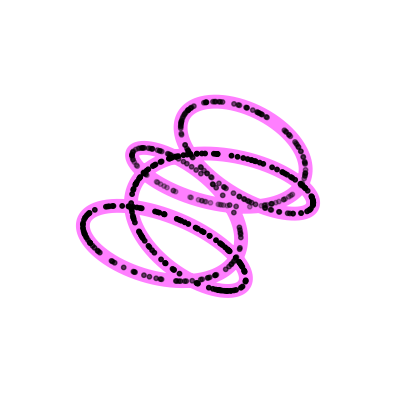
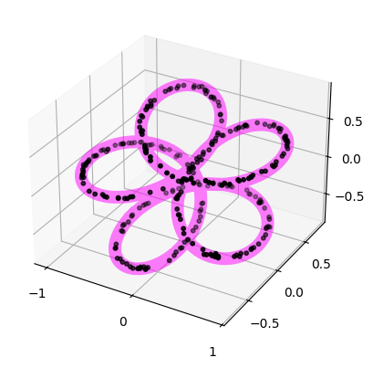
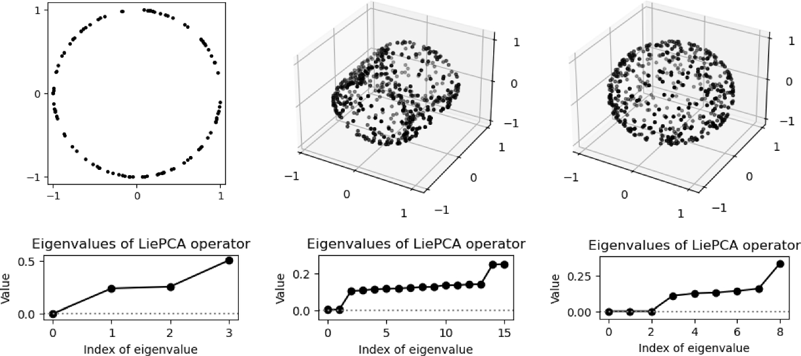

LieDetect user manual#
 |
LieDetect is an algorithm for estimating the representation types of compact Lie groups from finite samples of their orbits. It is currently implemented for \(SO(2)\), \(T^d\), \(SO(3)\), and \(SU(2)\). |
|
A representation of a Lie group \(G\) on \(\mathbb{R}^n\) is a group homomorphism \(\rho:G\to GL(n,\mathbb{R})\) mapping each group element to a \(n\times n\) real matrix. Given a point \(x_0\in\mathbb{R}^n\), its orbit under the representation is the set of points \(x\) such that \(\rho(g)\cdot x_0 = x\) for some \(g\in G\). The representation is called irreducible if \(\mathbb{R}^n\) has no non-trivial subspaces invariant under the representation. If \(G\) is a compact Lie group, any finite-dimensional representation can be decomposed as a direct sum of irreducible representations. The multiset of parameters characterizing this decomposition is called the representation type of \(\rho\).
Given a point cloud \(\{x_i\}\) lying on or close to an orbit of a representation \(\rho(g)\) of the compact Lie groups \(SO(2)\), \(T^d\), \(SO(3)\), or \(SU(2)\), LieDetect [Ennes and Tinarrage, 2025] estimates the representation \(\rho(g)\) in terms of its representation type. This estimate allows reconstruction of the representation orbit. The algorithm consists of four steps, described below and detailed in the paper.

Step 1: Orthonormalization#
Every representation of a compact Lie group can be made orthogonal. That is,
there exists a change of basis of \(\mathbb{R}^n\) for which the orbit lies
on the unit sphere. The first step of LieDetect estimates such a change of basis.
This step is implemented by the Orthonormalize class.
from gudhi.liedetect import Orthonormalize
ortho = Orthonormalize(pts)
pts = ortho.fit_transform(pts)
This operation is not equivalent to the usual radial projection onto the sphere obtained by normalization.
Step 2: LiePCA#
The second step uses the LiePCA algorithm of []. Tangent information along
the orbit is used to compute an operator approximating the infinitesimal action
of the representation (i.e., the associated Lie algebra representation).
This functionality is provided by the OrbitFitter class.
orbit_fitter = OrbitFitter(pts=pts)
lie_pca = orbit_fitter.lie_pca(nb_neighbors=nb_neighbors, orbit_dim=orbit_dim)
The number of eigenvalues of the LiePCA operator that are close to zero roughly corresponds to the dimension of the Lie group generating the orbit. They can be displayed with
orbit_fitter.print_lie_pca_eigenvalues()
For example, if the output is
Lie PCA first eigenvalues: 3.0e-04 1.2e-01 1.4e-01 2.4e-01
the orbit is likely generated by a Lie group of dimension 1.

Step 3: Optimization#
In this step, the estimated infinitesimal representation is projected onto the closest algebra compatible with a valid representation type.
_, _ = orbit_fitter.closest_algebra(group=group, group_dim=group_dim,
frequency_max=frequency_max,
method=method, verbose=True)
The decomposition of a representation into representation types may not be unique. The following function checks whether two representation types are equivalent.
are_representations_equivalent(group, groundtruth_rep,
orbit_fitter.representation_type_)
Step 4: Generate orbit and compute Hausdorff distances#
Once the representation type has been estimated, the corresponding orbit can be reconstructed.
reconstructed_orbit = orbit_fitter.sample_orbit(nb_points=30**3)
The non-symmetric Hausdorff distances between the reconstructed orbit and the input point cloud often provide a useful indicator of convergence.
print("Hausdorff distances:", orbit_fitter.hausdorff_distances_)
Generate synthetic data#
LieDetect also provides functions to generate synthetic data near orbits of representations.
from gudhi.datasets.linear_orbits import sample_orbit_from_group, sample_orbit_from_rep
# Choose the Lie group
pts = sample_orbit_from_group(group="torus", ambient_dim=4,
nb_points=100, group_dim=1)
# Choose the representation type
pts = sample_orbit_from_rep(group="torus", rep_type=((1,2),),
nb_points=100, method=method)
Simple example#
The example below illustrates a typical use of LieDetect. Points are sampled near an orbit of a representation of \(SO(3)\), and the four steps of the algorithm are applied to recover the representation type.
from gudhi.liedetect import OrbitFitter, Orthonormalize
from gudhi.datasets.linear_orbits import sample_orbit_from_group
# Input
pts = sample_orbit_from_group(group="SO(3)", ambient_dim=5,
nb_points=3000, group_dim=3)
# Step 1: Orthonormalization
ortho = Orthonormalize(pts)
pts = ortho.fit_transform(pts)
# Step 2: Lie PCA
orbit_fitter = OrbitFitter(pts=pts)
lie_pca = orbit_fitter.lie_pca(nb_neighbors=50, orbit_dim=3)
# Step 3: Optimization
_, _ = orbit_fitter.closest_algebra(group="SO(3)", group_dim=3,
method="bottom_lie_pca")
# Step 4: Reconstruct orbit and compute Hausdorff distances
orbit = orbit_fitter.sample_orbit(nb_points=30**3, method="uniform")
print("Hausdorff distances:", orbit_fitter.hausdorff_distances_)